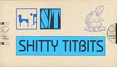

[1995 - Save Our Sperms - S.O.S. 04 - Tape] |
S/T
"Ich Weiß Wo S/T Lebt"
Since they didn't know where Syd Barrett lived (as they explain on the tape's
booklet), they decided to sing about themselves! Despite the title in german,
the song is sung in English. The tape was packaged in a dogshit-bag with
a few gimmicks and a booklet inside. All 24 songs are cover versions of bands
they like (The Legendary Pink Dots, Amon Düül 2, Can, Daniel Johnston,
Joy Division, etc). Only 25 copies of Shitty
Titbits were made.
|